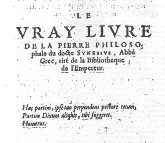

Le vrai livre du docte abbé Grec Sinesius IntroductionTiré de la Bibliothèque de l'empereur

revu le 27 juillet 2003
Sur Synésius, voyez notre Prima materia. Il semble bien que ce texte soit encore un aporcyphe, puisque Synésius cite Geber et Alphidius, alors que ces deux Philosophes ont vécu au Xe siècle au moins. Dès lors, on ne saurait tenir pour assuré ce que dit Berthelot dans divers articles écrits sur l'histoire de l'alchimie au sujet de Synésius. Il se pourrait d'ailleurs qu'il s'agisse d'un nom fait de cabale, puisque synésius en grec, signifie prudence et sagesse, qui sont deux des attributs doctrinals de l'alchimiste. Il serait donc vain d'en dire plus sur un auteur pseudépigraphe qui a emprunté le nom de l'Abbé Synésius. Toutefois, pour les lecteurs qui voudraient en savoir plus sur la figure de cet évêque, voici des extraits des sites consultés sur le moteur Google :
¯
1)- Synesius of Cyrene, 370?–415? -
Synesius of Cyrene, a Neoplatonist as well as a bishop, was an influence on Amos Bronson Alcott. Synesius was a close friend of Theophilus, patriarch of Alexandria, who was the uncle and predecessor of St. Cyril of Alexandria. Synesius was a student of Hypatia of Alexandria, a Neoplatonist widely recognized for her great intellect and ability at philosophy. Among his philosophical works is the Dion, a discussion of the interdependence of philosophy, religion, and culture, which he felt are all needed for a sure grasp of reality. In this treatise he criticized both the men in white mantles (philosophers) and the men in black (monks).Neoplatonism influenced other Transcendentalists besides Alcott, most notably Ralph Waldo Emerson. Among the Neoplatonists were Philostratus, Plotinus, Ammonius Saccas, Ocellus Lucanus, Macrobius, Sallustius, as well as (to an extent) Seneca and Apuleius.
Synesius, a thoroughly noble man, would have been at home with Marsilio Ficino, Pico della Mirandola, and Nicholas of Cusa. He offered Christendom an alternative to the Middle Ages that did not begin to be taken up until the Renaissance. Alcott wrote as follows.
" To conceive a child’s acquirements as originating in nature, dating from his birth into his body, seems an atheism that only a shallow metaphysical theology could entertain in a time of such marvellous natural knowledge as ours. ‘I shall never persuade myself,’ says Synesius, ‘to believe my soul to be of like age with my body.’ And yet we are wont to date our birth, as that of the babes we christen, from the body’s advent, so duteously inscribed in our family registers, as if time and space could chronicle the periods of the immortal mind, and mark its longevity by our chronometers. Only a God could inspire a child with the intimations seen in its first pulse-plays; the sprightly attainments of a single day’s doings afford the liveliest proofs of an omniscient Deity, revealing His attributes in the motions of the little one! . . . Were the skill for touching its tender sensibilities, calling forth its budding gifts, equal to the charms the child has for us, what noble characters would graduate from our families—the community receiving its members accomplished in the personal graces, the state its patriots, the church its saints, all glorifying the race."
2)- Theosophy Library Online Homepage
Try to ascend yourself, but do not cause the gods to descend. Employ every form of prudence on your own behalf, as if you lived in an army camp in enemy territory, a divine soul among demons, who, being earth-born, it is reasonable to suppose will attack you, since they become angry if anyone maintains foreign laws and customs within their borders.
SYNESIUS
The story of humanity, a ceaseless cyclic tide of aspiration and achievement, disintegration and despair, focusses upon changing centres of energy and enlightenment. When their extension in time and space is great enough, they become the civilizations and cultures that give history its measure and rhythm. Within that synoptic structure countless thousands of lesser currents move back and forth, interweaving in action and reaction the complex pattern of life which is the manifest expression of the archetypal movement of the numinous Monadic Host guiding humanity. Each eddy in the great stream has its own logic of unfoldment and makes its own contribution to the panorama of human existence. Macedon brought forth Alexander, Mongolia, Genghis Khan, Britain provided Arthur, and Mecca, Muhammad. What human memory' considers important in the saga of mankind is capricious at worst, rather arbitrary at best. Cyrenaica, the region roughly corresponding to modern Libya, was never the scene of spectacular events in recorded history. It quietly cultivated a way of life that would come to be embodied in Synesius, the man who most clearly saw the significance of his time and tried to stem the violent tides of barbarism and dogmatism and transmit the efflorescence of the classical world.
Cyrene was founded about 630 B.C. as a Greek colony. Aristoteles of Thera, a Dorian and Spartan, established the city and ruled it as King Battus. The area eventually expanded into five major cities known collectively as the Pentapolis. Though descendants of Battus held positions of influence throughout the history of the Pentapolis, the area came under Persian control during the campaigns of Cambyses II. By 480 B.C. Cyrene was again free, but it became an autonomous part of Alexander's empire in 331. When Berenice, daughter of the king of Cyrene, married Ptolemy III, Cyrenaica was ruled from Alexandria. With the fall of Egypt it became a Roman province of some importance. Its large farms and groves provided Rome, and later Constantinople, with grain and oil, and Libyan horses were esteemed throughout the Mediterranean world. The Pentapolis grew moderately prosperous, sufficiently urban to share in the amenities of cultivated living yet rural enough to preserve the simple pleasures of community festivals and the joys of the hunt and the harvest. "Cyrene", Strabo wrote, "grew great by the virtue of her land, for it is the best of all lands in breeding horses and is blest in its fruits." Herodotus attributed the invention of the Greek four-horse chariot to the Libyans. Cyrene gave the world great thinkers as well, among them Callimachus, the poet, and Eratosthenes, the head of the library at Alexandria, who determined the circumference of the earth with remarkable accuracy and made the first attempt to establish a scientific chronology of historic events beginning with the Trojan War.
The Cyrenaics of the fourth and third centuries B.C. anticipated later Epicurean philosophy. Aristippus of Cyrene held that one can know only one's own sensations, and therefore that pleasure is the only sensible end of human endeavour. For him, given the captivity of the senses, all pleasures are to be considered equally good. Theodorus, his follower, equated happiness with cheerfulness and thus found a basis for distinguishing between greater and lesser pleasures. Anniceris emphasized the pleasures of friendship, society and patriotism, but Hegesias held all pleasure to be illusion, arguing that the most mankind can hope for is the suppression of pain. He taught that death should be welcomed as the terminus of pain. Stoic views found favour among the practical Libyans, and neo-Platonic teachings were widely respected. The Christians of the Pentapolis were proud that the scriptures taught that "a man of Cyrene" had borne the cross of Jesus for him.
Synesius was born in Cyrene around AD. 370 into a family descended from the city's founder. Together with his brother Euoptius, and sister Stratonice, he could say without fear of contradiction that "the public monuments of Cyrene show the succession from Heracles to me", and "from Eurysthenes who led the Dorians to Sparta down to my father my pedigree is carved on them". Raised in a manner consonant with his aristocratic heritage, Synesius was imbued with a profound sense of paideia, the ideals of Greek culture and education. From early youth he possessed a profound sense of the sacred and yearned for communion with Deity. At the same time he learnt to appreciate the life of a country gentleman: farming, breeding and training horses and hunting. While growing up, he was especially fond of rhetoric and learnt to express himself with great beauty and precision. In 393 Synesius accompanied Euoptius to Alexandria, perhaps to study at the Museum. There he met Hypatia. He recognized in her the exemplification of all he cherished, the highest ideals of paideia, the virtue of perfected character, political acumen and practical ability, and the philosophical wisdom that integrated them into a living vision of human excellence. His conversion to the philosophical life as represented by Hypatia was as gradual as it was intense. For the rest of his life he submitted all his philosophical and poetic writings to her for her approval before he published them, sought her advice on personal, political and scientific matters, applied the dialectical method she transmitted from Ammonius Saccas and extolled her virtues to everyone, even her enemies. In a letter to his co-disciple Herculian, he said that the special bond between them is constituted by the fact that "we both saw with our own eyes and heard with our own ears the true exponent of the mysteries of philosophy".
Synesius studied under Hypatia for several years. Given his curial rank in Cyrenaica, he probably met many of the prominent citizens of Alexandria. He found the Christian disciples of Hypatia quite different from the mob that had desecrated the Serapeum, and he began to brood upon the future of the world as he knew and loved it. Cyrene had for years suffered from incursions of desert tribesmen, especially the Macetae and the Ausurians, who had discovered that the imperial and religious turmoil of Constantinople had left the province unprotected. Synesius lamented that the only sign of the emperor was the annual visit of the tax-gatherer. In 397 Synesius returned home to attend to practical affairs. Though his own position was relatively secure, disease and raiding parties had severely damaged the whole Pentapolis. He entered public life, and owing to some dispute over the future of the province, he found it prudent to travel for a period. He took the opportunity to visit Athens – a shadow of its former glory – and Antioch. Returning home, his upbringing made him identify with "the poor and downcast" and to feel responsible for assisting them. When, against his inclination, he was asked to head an embassy to the imperial court to seek a remission of taxation, he reluctantly agreed. He spent "three unspeakable years" in the capital of the empire.
No sooner had he arrived in the centre of the emerging Byzantine Empire than he began to see clearly that the whole of civilization was in the balance. He recognized that Christianity was not a mere passing fashion, for it was institutionally stronger than many aspects of the empire. The religion of his forefathers had been dealt a series of fatal blows by imperial legislation, though that only destroyed what could no longer be vivified by collective commitment. The noble attempt of the emperor Julian to revive the older religions upon a neo-Platonic philosophic basis and the theurgic mysteries as taught by Iamblichus failed because it was tied to a temple-worship which was no longer viable. If the heart of Hellenic culture, the spirit of the ancient world, was to survive, it had to do so within the context of the church. In Constantinople Synesius began to nurture the policy of pouring old wine into new bottles. Ammonius Saccas had shown the method in his universal interpretation of the spiritual truth found to some extent in every philosophy and religion. Hypatia had opened the door by freely admitting Christian students to the Alexandrian Academy, being concerned with philosophy and the growth of the soul and not with dogmatic squabbles and claims to exclusiveness. Origen had demonstrated that the deepest mysteries could be found in the message of Christ by those who were ready for the most intense spiritual striving. Synesius saw that the church must be brought to save and serve the essentials of man's spiritual awareness even while pushing aside all that was derivative and dead.
The emperor Arcadius was pious, ineffectual and, in the estimate of Synesius, 'bovine'. Aurelian was the praetorian prefect of the East, an orthodox Christian and an intelligent and capable administrator. Gainas, a Goth who had risen to command the army, was opposed to Aurelian and his followers. Under the influence of Stilicho, the Vandal military commander of the Western Empire, Gainas had murdered the minister Rufinus – a loss many thought was a blessing. Nursing designs to seize the throne, Gainas had encouraged Tribigild to revolt in Asia Minor and then persuaded Arcadius to allow him to field an army to put it down. Assigning his Gothic friends to the highest military positions, he soon controlled the entire military force of the Eastern Empire. Synesius saw the danger to Constantinople and appealed to the emperor to act. Obtaining an audience before the court, he delivered a speech, On Kingship, whose eloquence placed it among the masterpieces of the period. The true king, he boldly affirmed, lives for the welfare of the people. Thus the true king is the representative of divine providence and must base his own nature on spirituality and overthrow the wanton "democracy of the passions". He must first be king within himself. But in fact, the Roman emperor had become the centre of endless pomp and pseudo-religious ritual.
The fear that you may become men if you are frequently seen keeps you bound prisoners, besieged by yourselves, neither seeing nor hearing anything that may develop practical sense, with no pleasures but those of the body and then only the most sensual, such as touch and taste, living in fact the life of a mollusc. So long as you disdain manhood, you can never reach the perfection of manhood.Such effete beings are surrounded by microcephalous courtiers. Barbarian mercenaries who respect nothing in the empire, least of all its citizens, take the field and threaten the throne and all it should represent. Political power and imperial justice are bought and sold in the market-place of the governors' residences. Only the emperor can alter the situation by appointing officials of integrity and by acting like a true king.The straightforward speech was typical of the courage of Synesius. While his words were well received at court, Arcadius wavered indecisively until events forced his hand. Gainas demanded that Aurelian and Saturninus, another military commander, be handed over to him. Arcadius acquiesced and the pair were sent into exile. Even though Gainas moved his troops into Constantinople itself, Synesius remained openly loyal to his exiled friend. Caesarius, brother and enemy of Aurelian, had become praetorian prefect upon Aurelian's exile, and he welcomed Gainas into the metropolis. Discharging many of the garrison troops, Gainas weakened the defenses of the inner city and prepared to stage a coup. But just when everything appeared to be lost, Gainas prematurely precipitated a skirmish with the guards at the gates and caught his own men in the city unprepared. The public alarm was sounded and the general populace, already on the verge of panic, attacked the Goths within the city and at the walls. Finally spurred to act, Arcadius declared Gainas a public enemy and the citizenry did the rest. The Goths in the city were killed and Gainas fled towards Thrace. Though he eluded the Roman troops, he was subsequently killed by Uldes the Hun, and Aurelian returned to Constantinople in triumph.
Synesius was deeply pleased that the movement of which he was a part had won the day, but for him these events were of vast symbolic importance. First of all, they represented the victory of the forces of order over the forces of chaos. Secondly, they showed that Christianity and Mediterranean culture could be compatible, especially when the empire supported the spirit of Christian institutions and Christianity embraced Hellenic ideas of reason, education, action and governance. The emperor Julian had seen Christianity as an anti-religious threat to the spiritual sensitivity of the Graeco-Roman world, but Synesius saw the forces of nomadic barbarism as dangerously anti-religious. He was well aware of Christian excesses and the invidious penchant for dogmatism and doctrinal exclusivity, but he had been witness to the ability of Christians to rise and support a more inclusive cause. Finally, he considered these tumultuous events an indication that cycles run their course. Just as the ancient Greek world-view, founded by the gods themselves, had served its purpose, so too a nascent world-view was now emerging. The spiritual movements initiated by Orpheus, Pythagoras and Plato were now renewed by the theophanous advent of Jesus, commencing a new cycle of activity consonant with what had gone before. The intuitive philosopher who sensed the mysteries of life could recognize the invisible truth behind the veil of seeming. Synesius expressed these convictions in a treatise, On Providence, written as an allegorical tale of the struggle between the good Osiris (Aurelian) against the evil Typhos (Gainas), sons of the mythical Egyptian king Taurus (Arcadius). Given the speech On Kingship, it is not surprising that Taurus plays no substantive role in the allegory.
Shortly after Aurelian was made consul, Synesius secured the remission of taxes for Cyrenaica. His mission completed, he gladly departed Constantinople. Perhaps significantly, he left aboard ship in the middle of an earthquake that damaged the city. He visited Hypatia and his brother Euoptius in Alexandria, and there he married a Christian woman in 403. Theophilus, bishop of Alexandria, was as dogmatic as his successor Cyril, but he was also an opportunist who could appreciate subtlety in a way that was lost on the instigator of Hypatia's murder. Synesius had close ties to the Alexandrian Academy and influential neo-Platonists in Constantinople, as well as warm relations with a number of influential Christians. He had already demonstrated the highest moral integrity and great political astuteness. Living in Cyrene, he could be admired from afar, and his purity of character would not embarrass Alexandrian Christendom in the way Hypatia did by her presence. After spending some time in Alexandria, Synesius was called back to Cyrene in 405 to help stem an Ausurian invasion. His military skill, apparent for the first time, earned the gratitude of the Libyans. Retiring to his estates in the interior of Cyrenaica, he became once again the gentleman farmer and joyfully reared three children.
In these brief years of relative peace and creativity Synesius wrote letters, essays and treatises. He contributed to adoxography, the humorous art in which an inglorious subject is treated with high seriousness. Dio Chrysostom, whose rhetorical skills had won him the title 'golden-mouthed', was profoundly admired by Synesius. Dio had written the adoxographical In Praise of Hair and Synesius imitated it in writing In Praise of Baldness, arguing that the bald head is more perfectly a sphere and therefore closer to the One. In jesting he used neo-Platonic ideas that he himself took seriously, refraining from joking at the expense of other schools.
He also wrote the Dion, a discussion of the interdependence of philosophy, religion and culture, which are all needed for a sure grasp of reality. He criticized the men in white mantles (philosophers) and the men in black (monks). Rejecting the Stoic notion that cultured expression is unnecessary to philosophy – the love of wisdom – or even a positive hindrance to understanding, Synesius pointed to Dio, a Stoic, as the exemplar.
For I think it right that the philosopher must in no way be rude or base, but rather an adept of fine and cultured ways, a Hellene to the core, by which I mean a man who is able to communicate and deal with people by being a competent practitioner of all forms of literary eloquence.Philosophy is both the sublime art and the foremost science. The philosopher must "acquire knowledge as a man of letters, but he will examine critically each and every thing as a philosopher". Such a person can communicate the mysteries of philosophical consciousness and also veil them. Without the broad but precise skills of an accomplished speaker, "one of two proclivities overtakes him: either to be silent or to speak of things unlawful to mention". Such skill in timing is characteristic of the sage. Monks, on the other hand, while withdrawing from the world, also abandon paideia. Discovering that they cannot meditate ceaselessly, they turn to basket weaving, an activity which is useful in itself but which does not aid the mind in aspiring to Deity. Rather, they become debaters about God, argumentative and narrow-minded. Strict in their rules, they do not understand the reasons for what they do. "They want me to be their disciple and promise to make me in a twinkling a ready talker on the things of God, and able to harangue days and nights together." Such attitudes are a desecration of the Divine. In On Dreams Synesius taught that the soul is enveloped with the Divine in deep sleep but it cannot transmit its pure awareness to the waking consciousness. Through the habit of moderation, the discipline of virtue and continuous aspiration, consciousness can become sufficiently pellucid to receive and retain intimations of Deity, which may take the form of guidance in the context of spiritual and earthly dangers.When the bishop of Ptolemais died in 409, the populace called for Synesius to assume the office because of his ability, kindness and piety. Theophilus seized the opportunity and offered to appoint him. Startled and reluctant, Synesius thought himself spiritually unworthy and philosophically unsuited for the post.
The episcopate is a compliment, but am I fit for it? I think very unfit.... In serious things I go my own way, but I also like amusement. Now a bishop should be as able to do without amusement as God is. And in serious and sacred things he cannot go his own way and be independent, but must belong to everybody and teach what is recognized. He must be a man of affairs, able at once to undertake endless business and maintain his spiritual life. For myself, I feel it pollution even to go into town.After prolonged reflection Synesius expressed his willingness to accept the sacred office, providing that a number of conditions were recognized. He was married and he did not wish to put away his wife. Further, certain orthodox doctrines were repugnant to him, and he insisted upon being free to believe that each soul is not created at birth but exists from eternity; that the world was neither created nor will be destroyed in any literal sense; that the incarnation of Jesus, though divine, was not unique in history; that the resurrection of the dead is a mystery which is not revealed in the doctrine of physical restoration; and that truth is philosophically concealed in Christian doctrine, not to be revealed in homilies and sermons. For his part, as bishop he would be orthodox in his public teaching, "speaking mythically", but at liberty to philosophize in private.After eight months of brooding Theophilus accepted this standpoint and made Synesius bishop of Ptolemais with authority over the whole of Cyrenaica. He was quickly baptized, ordained and installed. Synesius took his duties seriously, raising money for the poor, encouraging toleration and teaching an edifying, if truncated, doctrine. As always in his life, he acted with deliberation, precision and vigour. When Andronicus, "a man from the ninny-fisheries", was appointed governor of Cyrenaica, he issued an edict denying the traditional asylum of the church, boasting that he would torture even a man who clung to the feet of Christ. Synesius convened a synod and excommunicated the governor, forwarding a list of specific charges to the churches. Andronicus relented and sought pardon, which was freely given. When two bishops argued over possession of a small fort owned by one of them, the other seized it and consecrated it as a church, using the sacred ritual as a claim to rightful possession. The synod held the view that the consecration was irrevocable, but Synesius ruled that there is a great difference between sacrament and superstition. Ritual devoid of the spirit is empty of significance. The spirit of Deity is not present in anger and avarice, and the consecration was invalid. The fort was returned with apologies, only to be freely given back by its owner who had been moved by the skilful justice of Synesius.
Synesius never set down the philosophical theology he wanted the church to adopt, but he exemplified it in his life. When facing Andronicus alone he had been calm and courageous despite the pain he felt from the death of one of his children. A few years later his other children died in quick succession, and shortly thereafter he was forced to fortify Ptolemais against Ausurian invasions. He carried the signal-torches himself, for the military commander dispatched to defend the Pentapolis preferred to issue orders for war from a ship at sea. Cyrenaica, abandoned by an empire with grave difficulties close to the capital, was in rapid decline. The church, after the accession of Cyril in 412, seemed even more anxious to move in directions contrary to the Synesian spirit. Synesius disappeared from history like Cyrene, and his great vision was unnoticed in the welter of titanic forces that shattered the world he loved. This noble man, who would have been at home with Marsilio Ficino, Pico della Mirandola and Nicholas of Cusa, offered Christendom an alternative to the Middle Ages that would not be taken up until the Renaissance. The last light of Cyrenaica, perhaps the last true Hellene, he was far ahead of his time. He died about 415, and this was perhaps precipitated by the shock of hearing about the murder of Hypatia. Forgotten by those who could not grasp his universal standpoint, he lived on in the golden thread of memory that eventually elevated tribal Islam into the cultural force that stimulated the rebirth of Europe. In his writings as well as his life Synesius had fearlessly blended the ideals of the old world with the aspirations of a new age:
Where Time is not with his tide
Ever running, never weary,
Drawing earth-born things aside
Against the rocks: nor yet are given
The plagues death-bold that ride the dreary
Tost matter-depths. Eternity
Assumes the places which they yield!¯ Nous le répétons, ce n'est pas Synésius qui est l'auteur de cet écrit. Ce Vray Livre se compose d'une longue introduction, d'une Pratique, et de trois opérations : sublimation, déalbation et rubification. Viennent la Projection et un Epilogue suivant Hermès. Ces parties sont inégales. De notre avis, le meilleur du Vray Livre se situe dans l'introduction et la sublimation. Les autres parties sont obscures et axées principalement sur la voie humide.
Le vrai livre du docte abbé Grec Sinesius 
Combien que les anciens philosophes aient écrit diversement de cette science, cachant sous une infinité de noms les vrais principes de l'art. Ils ne l'ont toutefois fait sans de grandissimes considérations que nous représenterons ci après. Et combien qu'ils aient parlé fort diversement, pour cela ils n'ont été aucunement discordants, mais tendant à une même fin, parlant d'une même chose, ils ont trouvé bon de nommer, surtout le propre agent, de nom étrange, et contraire quelquefois à sa nature et qualité. Or entend donc mon fils, que le grand Dieu a créé deux Pierre avec cet univers, qui sont la blanche et la rouge, lesquelles deux sont sous un même sujet, et après croissent en telle abondance que chacun en peut prendre tant qu'il veut1. Et leur matière est de telle sorte, qu'elle tient le milieu entre le métal, et le Mercure, et est en partie fixe, et en partie non fixe, autrement ne tiendrait point le milieu entre les métaux et le Mercure, laquelle matière est l'instrument qui accomplira notre désir, si nous la préparons2. Et parce que ceux qui travaillent en cet art sans icelui médium, perdent toute leur peine, mais s'ils connaissent ce médium, toutes choses leur seront possibles et propices. Sache que ce médium se trouve étant aérien avec les corps célestes, et seulement en icelui est le genre masculin, et féminin à proprement parler, ayant une vertu ferme, forte et fixe, et permanente, de l'essence duquel (comme je te disais) les philosophes ont parlé seulement par similitude, et figures. Et cela afin que la science ne fut jamais comprise par les ignorants, ce qu'advenant tout périrait3. Mais seulement par les âmes patientes, esprits raffinés, séquestrés du bourbier du monde, et nettoyés de l'immondicité de terrestre, fangeux qui est avarice, par laquelle les ignorants sont attachés le nez vers la terre en ce monde (sans cette admirable quintessence) domicile de toute pauvreté, assurés que ces âmes divines, après avoir pénétré dans le puits de Démocrite, c'est à dire la vérité des Natures, connaîtront sans doute la confusion que ce ferait à tout ordres et métiers si chacun pouvait faire de l'or en telle quantité qu'il désirerait4. Et parce qu'ils ont voulu parler par figures, type et analogies, afin de n'être entendus que par les âmes sages et saintes, et illustrée de Sapience. Si est-ce toutefois qu'en œuvres composées, ils ont donné certain chemin, voie et règle, par laquelle le sage peut comprendre tout ce qu'ils ont écrit occultement, et à la fin y parvenir après quelques erreurs comme j'ai fait, loué soit Dieu. Et bien que le vulgaire ignorant dûsse entendre ces raisons, et par ainsi vénérer ce qui ne peut monter en sa cervelle, au contraire il a accusé les philosophes de fausseté, et méchanceté, si bien que l'art en est quasi partout en mépris, parce qu'il y a peu de sages. Or moi je te dis maintenant, qu'ils ont toujours parlé suivant la vraie vérité, mais fort couvertement, et quelquefois fabuleusement ; ce que je défriche clairement en ce petit livre, et de telle façon, que tout désirant la science, entendra ce qui a été caché par les philosophes. Toutefois s'il me pensait entendre sans connaître la nature des Eléments et choses créées, et notre riche métal, il travaillerait en vain ? Mais s'il connaît les natures fuyantes, et suivantes, par la grâce de Dieu il y pourra parvenir. Donc je prie Dieu que celui qui entendra ce présent secret puisse œuvrer à la gloire et louange de sa sainte Divinité. Sache donc, mon cher fils, que l'ignorant ne saurait comprendre le secret de l'art, parce qu'il dépend de la connaissance du vrai corps qui lui est caché. Connais donc, mon fils, les Natures, le pur et l'impur, le monde et immonde, parce que nulle chose ne peut donner ce qu'elle n'a. Et parce que les choses ne sont, et ne se peuvent faire selon leur nature, use donc du plus parfait et prochain membre que tu trouveras, et te suffira. Laisse donc le mixte, et prends son simple. Car il est de la quintessence. Et note que nous avons deux corps de très grande perfection, remplis de vif argent, donc d'eux tire ton vif argent, et tu en feras la médecine, appelée d'aucune quintessence, laquelle est une puissance, impérissable, permanente, et toujours victorieuse, voire c'est une claire lumière, qui illustre de vraie bonté toute âme qui l'a une fois savourée. Elle est le nœud et le lien de tous les éléments qu'elle contient en soi, et l'esprit qui nourrit toutes choses, moyennant lequel la nature œuvre en l'univers5. Elle est la force, le commencement, et la fin de toute l'œuvre, et à ce qu'en une parole je te manifeste le tout, sache que la quintessence et la chose occulte de notre pierre, n'est autre chose que notre âme visqueuse, céleste, et glorieuse6, tirée par notre magistère de sa minière, laquelle seule l'engendre, et qu'il n'est pas possible à nous de faire cette eau par art, mais nature est celle seule qui l'engendre7, et cette eau est le vinaigre très aigre qui fait l'or être pur esprit, voire elle est cette bénite Nature, qui engendre toutes les choses, laquelle avec putréfaction est très unie, et avec sa Viridité fait apparaître plusieurs couleurs8. Et je te dis, mon fils que tu ne fasses compte des autres choses comme vaines, mais seulement de cette eau, qui brûle, blanchit, dissout, et congèle, c'est elle qui putréfie et fait germer9. Et parce que je t'avise que toute ton intention soit en la décoction de ton eau, et ne te fâche point de la longueur du temps, autrement n'auras aucun fruit. Cuis le doucement peu à peu jusqu'à ce qu'il change de sauce couleur en parfaite et prends garde qu'au commencement tu ne brûles ses fleurs, et sa vivacité, et ne te hâte point pour être tôt à la fin10. Clos bien ton vaisseau, afin que celui qui est dedans ne puisse sortir, et ainsi pourras venir à l'effet11. Et note, que dissoudre, calciner, imbiber, cuire, fixer, broyer, dessécher, et distiller, sont une même chose et ne veulent rien de plus signifier que cuire la nature jusqu'à ce qu'elle soit parfaite12. Note encore, que tirer l'âme, ou bien l'esprit, ou le corps, n'est autre chose que les calcinations susdites, parce qu'elles signifient l'opération de Vénus13. C'est donc avec le feu de l'extraction de l'âme, que l'esprit sort doux, comprends-moi14. Cela peut être encore, dit, de l'extraction de l'âme du corps et une autre fois réduction sur icelui composé, jusqu'à ce que le tout soit tiré à la commixtion de tous les quatre éléments15. Et ainsi ce qui est dessous, est semblable à ce qui est dessus, et ainsi y sont fait deux luminaires, l'un fixe, l'autre non, desquels le fixe demeure dessous, et le volatil dessus, soi mouvant perpétuellement jusqu'à ce que celui qui est dessous, qui est le mâle, monte sur la femelle et tout soit fixe, et alors naît un luminaire sans pareil. Et comme au commencement un seul a été, semblablement en cette matière tout viendra d'un seul et retournera en un seul16. Ce qui s'appelle convertir les Eléments, et convertir les Eléments s'appelle, faire l'humide sec, et le fugitif fixe, afin que la chose épaisse se diminue et débilite la chose qui fixe les autres, demeurant le fixatif de la chose. Ainsi se fait la mort et la vie des Eléments, qui composés, germent et produisent, ainsi une chose parfait l'autre, et lui aident à combattre contre le feu17.
Mon fils, il est besoin que tu travailles avec le Mercure des philosophes et des sages, qui n'est pas le vulgaire, ni du vulgaire en tout, mais selon iceux est la première matière, l'âme du monde, l'Elément froid, l'Eau bénite, l'Eau des sages, l'Eau venimeuse, le Vinaigre très fort, l'Eau minérale, l'Eau de céleste grâce, le Lait virginal, notre Mercure minéral et corporel18. Car icelui seul parfait toutes les deux Pierres blanche et rouge. Regarde ce que dit Geber19. Que notre art ne consiste en la multitude des choses diverses, parce que le Mercure est une seule chose, c'est à dire, une seule Pierre dans laquelle consiste tout le magistère, à laquelle tu n'ajouteras aucune chose étrange, excepté qu'en sa préparation tu ôteras d'icelle toutes matières superflues, d'autant qu'en cette matière toutes choses nécessaires en cet art y sont contenues20. Et pour ce notamment il dit. Nous n'ajouterons rien d'étrange sinon le Soleil et la Lune pour la teinture blanche et rouge, qui ne sont étrangers, mais sont son Ferment par lequel se fait l'œuvre21. Finalement note mon fils, que ces Soleils et Lunes sont semblables aux Soleils et Lunes vulgaires, parce que nos Soleils et Lunes sont meilleurs en leur nature que les Soleils et Lunes vulgaires. D'autant que notre Soleil et notre Lune en un même sujet sont vifs, et ceux du vulgaire sont morts, à comparaison des nôtres existant, et permanents en notre Pierre22. Ensuite de quoi tu remarqueras que le Mercure tiré de nos corps est semblable au Mercure aqueux et commun, et parce que la chose se réjouit de son semblable, et a plaisir avec lui, et s'accompagne mieux et volontiers, ainsi que fait le simple et composé, ce qui a été caché par les philosophes en leurs livres. Donc tout le bénéfice qui est en cet art, gît au Mercure, au Soleil et Lune, et tout le reste est vain23. Aussi Diomédes dit, use de la matière à laquelle ne dois introduire chose étrange, poudre, ni eau, parce que les choses diverses n'amendent point notre pierre, et par-là il démontre à qui bien l'entend, que la teinture de notre Pierre ne se tire que du Mercure des philosophes, lequel est leur principe, leur racine, et leur grand arbre duquel sortent puis après tant de rameaux24.
Elle n'est point vulgaire, mais philosophale, avec laquelle nous ôtons le surplus d'icelle pierre, qui en effet n'est qu'élévation de la partie non fixe par la fumée, et vapeur, car la partie fixe doit demeurer au fond, aussi nous ne voulons pas que l'un se sépare de l'autre, mais qu'ils demeurent et se fixent ensemble. Et sache que celui qui sublimera comme il faut, notre Mercure philosophal, dans lequel est toute la vertu de la pierre, il parfait le magistère. Et pour ce, dit Geber, toute la perfection consiste en la sublimation, et en cette sublimation sont toutes les autres opérations, savoir distillation, assation, destruction, coagulation, putréfaction, calcination, fixation, réduction des teintures blanches et rouges procréées et engendrées en un fourneau et un vaisseau, et c'est le chemin droit jusqu'à la finale consommation, de quoi les philosophes ont fait divers chapitres pour arrêter les ignorants25.
Prends donc au nom du grand Dieu, la vénérable matière des philosophes, nommée Hylec des Sages26, lequel contient le susdit Mercure Philosophal, appelé première matière du corps parfait27, met le en son vaisseau comme il faut, clair, lucide, et rond, bien bouché et clos par le sceau des sceaux, et le fais chauffer dans son lieu bien préparé avec tempérée chaleur par un mois philosophal continuel, le conservant en la sueur de la sublimation jusqu'à ce qu'il commence à se purifier, s'échauffer, colorer, et congeler avec son humidité métallique, et se fixe tant qu'il ne puisse plus rien monter par la fumeuse substance aérée, mais qui demeure fixe au fond, altérée et privée de toute visqueuse humidité et noire qui s'appelle robe noire, ténèbres, ou la tête du Corbeau28. Ainsi quand notre pierre est dans le vaisseau, et qu'elle monte en fumée, en haut, cette manière se nomme sublimation et quand tombe du haut en bas distillation, et descention, quand elle commence à tenir de la fumeuse substance et se putréfier, et que par la fréquente montée et descente se commence à coaguler, alors se forme la putréfaction, et le dévorant soufre, et finalement par le défaut ou privation de l'humidité de l'eau radicale, se fait la calcination, et fixation en un même temps par la seule décoction en un seul vaisseau comme j'ai dit déjà, et d'avantage en cette sublimation est faite la vraie séparation des Eléments, pour ce qu'en notre sublimation l'élixir d'eau se change en l'Elément terrestre sec et chaud, par laquelle chose est manifeste que la séparation des 4 Eléments en notre Pierre n'est pas vulgaire mais philosophale. Et pour ce il y a en notre Pierre seulement deux Eléments formés. Savoir la terre et l'eau : mais la terre tient en son espoir la vertu et la siccité du feu. Et l'eau contient en soi l'air avec son humide. Ainsi en notre Pierre nous n'avons que deux Eléments en vue, encore qu'en effet en avons quatre. Et par-là tu peux dire que la séparation des 4 Eléments est toute phisicale non vulgaire et réelle, comme les ignorants sont journellement. Donc continue la décoction au feu lent, jusqu'à ce que toute la matière noire apparaissant en la superficie, soit du tout remise par le magistère, laquelle noirceur est par les philosophes nommée, Robe ténébreuse29 de la Pierre, qui après demeure claire, et est nommée Eau mondifiée de la terre, ou bien de l'élixir30. Et note, que la noirceur qui apparaît, est signe de la putréfaction. Et le commencement de la dissolution, est signe de la putréfaction. Et le commencement de la dissolution, est signe de la conjonction des deux Natures, et cette noirceur apparaît quelques fois en 40 jours31, plus ou moins, selon la quantité, de la matière, et la bonne industrie de l'ouvrier qui aide de beaucoup à la séparation de la dite noirceur. Or mon fils, par la grâce de Dieu tu as dorénavant un Elément de notre Pierre qui est la terre noire, la tête de Corbeau des autres dite l'ombre obscure, sur laquelle terre comme sur un tronc tout le reste a fondement. Et cet Elément terrestre et sec, est nommé Laton32, Taureau33, Fèces noires34, notre Métal35, notre Mercure. Et ainsi par la privation de l'humidité adjustive qui est ôtée par la sublimation Philosophique le volatil est fixe, et le mol est fait sec et terre, voir selon Geber, est faite mutation de la complexion comme de la Nature froide et humide, en colère sèche, et de la liquide en l'espèce selon Alphidius36. Et ainsi est apparente l'intention des philosophes quand ils disent que l'opération de notre Pierre, n'est que changement de Nature et révolution d'Eléments. Tu vois donc comme par icelle incorporation, l'humide se fait sec, et le volatil fixe, le spirituel corporel, et le liquide épais, l'eau feu, et l'air terre, et ainsi certainement changent leur vraie nature, et tous les 4 Eléments se circulent l'un l'autre37.
Et le convertit notre Mercure en Pierre blanche, et ce par feu de décoction. Après que la terre sera séparée de son eau, alors se doit mettre le vaisseau sur les Cendres, comme on use au fourneau de distillation, et distiller l'eau à feu lent au commencement, de la manière que l'eau vienne si doucement que tu puisses distinctement nombrer jusqu'à quarante noms, ou bien dire cinquante six paroles, et soit observé cet ordre par tout la distillation de toute la terre noire, et ce qui se trouve au fond du vaisseau, qui est la fèces restée avec la nouvelle eau, alors se dissoudra, laquelle eau contiendra trois ou quatre parts d'avantage qu'icelles fèces, afin que tout se dissolve et convertisse en Mercure et argent vif38. Je te dis que tu feras tant de fois ceci, qu'il n'en reste que le Marc. En cette distillation n'y a point de temps déterminé, mais se fait selon la grande ou petite quantité de l'eau, observant toujours la quantité du feu39. Après tu prendras la terre que tu auras réservée en son vaisseau de verre avec son eau distillée, et ainsi avec feu lent et doux, comme était celui de la distillation, ou purification, ou bien un peu plus fort, tu continueras, jusqu'à ce que la terre soit sèche et blanche, et ait bu toute son eau en se séchant. Cela fait, lui mettra de l'eau susdite, et ainsi comme au commencement continueras toujours ta décoction, jusqu'à ce qu'icelle terre soit entièrement blanche, mondée, et claire, et ait bue toute son eau. Et note que ladite terre sera ainsi lavée de sa noirceur par sa décoction, comme je t'ai dit, parce qu'aisément elle se purifie avec son eau et se mondifie, qui est la fin du magistère, et alors garderas icelle terre blanche diligemment. Car elle est le Mercure blanc, magnésie blanche, terre feuilletée40. Après tu prendras cette terre blanche rectifiée comme dessus, et la mettras en son vaisseau sur les cendres au feu de sublimation, à laquelle donneras fort feu, jusqu'à ce que toute l'eau coagulée qui sera dedans, vienne en l'Alambic, et que la terre, l'eau, et l'air, et bien que la terre contienne en soi la nature du feu, néanmoins il n'est point encore apparent en effet, comme tu verras, quand par plus grande décoction la fera devenir rouge, tellement que lors tu verras manifestement le feu en apparence, et ainsi on doit procéder à la Fermentation de la terre blanche, afin que le corps mort s'anime, et soit vivifié, et que sa vertu se multiplie en infini. Mais notez que le ferment ne peut entrer dans le corps mort, que moyennant l'eau qui a fait le mariage et conjonction entre le Ferment et la terre blanche41. Et sache qu'en tout Ferment on doit observer le poids afin que la qualité du volatil ne surmonte le fixe, et que le mariage ne s'en aille en fumée. Car dit Senior, si tu ne convertis la terre en eau, et l'eau en feu, l'esprit et le corps ne se conjoindront point ensemble. Et pour ce faire, prend une lamine enflammée, et met dessus une goutte de notre médecine, elle pénétrera, et se colorera de parfaite couleur, et sera signe de perfection. Et s'il advient qu'il ne teigne, réitère la dissolution et coagulation, jusqu'à ce que soit teignante et pénétrante. Et note que sept imbibitions sont suffisantes au plus, et cinq au moins, à ce que la matière se liquéfie, et soit sans fumée, et alors est parfaite la matière au blanc. D'autant que la matière se fixe quelquefois en plus longtemps, et quelquefois en moindre, selon la quantité de la Médecine. Et note que notre Médecine, depuis la création de notre Mercure, demande le terme de sept mois jusqu'à la blancheur, et jusqu'à la rouge cinq, que font douze.
Prends de la Médecine blanche tant que voudras, et la met avec son verre sur les cendres chaudes, tant qu'elle soi desséchée comme icelles. Après donne lui de l'eau du Soleil, qu'aura gardée à part pour ladite besogne, et continue le feu du second degré, jusqu'à ce que devienne sèche, puis lui redonne de l'eau susdite, et ainsi successivement imbibe et dessèche, jusqu'à ce que la matière se rubifie, et liquéfie comme cire, et coule sur la lamine rouge, comme est dit, et alors sera la matière parfaite au rouge. Mais note, qu'à toutes les fois tu dois mettre d'avantage de l'eau Solaire que ce qu'il en faut pour couvrir le corps, et non plus, et ceci se fait à ce que l'Elixir ne se submerge, et se noie, et ainsi se doit continuer le feu jusqu'à la dessiccation, et alors se doit faire la seconde imbibition, et ainsi procède par ordre jusqu'à la perfection de la Médecine, savoir jusqu'à ce que la puissance de la digestion du feu la convertisse en poudre très rouge, qui est la vraie Huile des Philosophes, la Pierre sanguinâtre, le Pourprin Coral rouge, le Rubis précieux, le Mercure rouge, et la Teinture rouge42.
Tant plus tu dissoudras et coaguleras, tant plus multipliera sa vertu jusqu'à l'infini. Mais note, que la Médecine se multiplie plus tard par solution, que par Fermentation. Par quoi la chose soluë n'opère pas bien, si premier elle ne se fixe en ton Ferment. Néanmoins plus abonde la multiplication de la Médecine soluë, que Fermentée, d'autant qu'il y a plus de subtilisation. Encore je t'avise qu'en la multiplication tu mettes une part de l'œuvre sur quatre de l'autre, et en peu de temps se fera poudre, selon le Ferment43.
Ainsi tu sépareras la terre du feu, le gros du subtil, doucement avec grand esprit, c'est-à-dire, que tu sépareras les parties unies au four, par la dissolution et la séparation des parties, comme la terre du feu, le subtil de l'épais, etc. Savoir la plus pure substance de la Pierre, jusqu'à ce que te demeure nette, sans aucune macule et ordure. Et quand dit, elle monte de la terre au Ciel, et puis une autre fois retourne en terre, faut entendre la sublimation des corps44. Encore pour bien expliquer la distillation, il dit : Que le vent le porte dans son ventre, savoir quand l'eau distille par l'Alambic, où il monte premièrement par le vent fumeux et vaporeux, et après retourne au fond du vaisseau encore en eau. Voulant encore montrer la congélation de la matière, il dit : Sa force est entière si elle retourne en terre, c'est à dire, si elle est convertie par décoction. Et pour généralement démontrer toute les choses susdites, il dit : Et recevra la force inférieure et supérieure, c'est à dire des Eléments, d'autant que si la Médecine reçoit la force des parties légères, savoir de l'air et feu, elle recevra aussi les parties les plus graves et pesantes, se changent en eau et en terre, et c'est ainsi que les matières ainsi perpétuellement conjointes aient permanence, demeurance, fermeté et stabilité. Loué soit Dieu
Notes FIN
Introduction -
1. par pierre rouge et blanche, il faut entendre les Soufres. Le Soufre blanc ou or blanc est le principe Sel de Paracelse, appelé aussi Arsenic par Geber et Corps par l'intrusion d'éléments issus du Christianisme dans la philosophie hermétique -
2. Il s'agit donc d'une matière visqueuse, soumise à un feu de forge, qui permet de solubiliser, c'est-à-dire de sublimer les Soufres -
3. Cette substance aérienne qui se trouve d'accord avec les corps célestes est, par la voie sèche, obtenue à partir de deux sels dont l'un est régi par Vénus-Aphrodite, et l'autre par Arès [cf. tartre vitriolé] - On la dit aérienne, parce qu'elle contracte des rapports avec Zeus et le Ciel étoilé. Son acquisition est voilée par l'allégorie de la rosée de mai - Tous les Adeptes sont d'accord sur un principe fondamental : se taire et ne parler que par énigmes. Les deux premières lettres du mot « chut ! » en latin sont st. Initiales du mot stannum et stibium. Dans un cas, indication sur un sel d'étain que l'on peut employer dans la voie humide ; dans le second cas, indication sur l'antimoine ou stibine, qui comme Artéphius l'a dit, est des parties de Saturne -
4. il y a là plusieurs traits de cabale. Le bourbier du monde évoque l'or blanc ou Sel. Les relations à la terre sont du même ordre et expliquent pourquoi les Adeptes nous disent que l'une des matières premières se trouve partout et que le pauvre la possède aussi bien que le riche. Nous aurions tendance, d'ailleurs, à penser que le pauvre en possédait, à l'époque, bien plus que le riche.
5. C'est du Mercure qu'il est question. Redisons ici qu'il existe trois Mercures qui ont été voilés par les alchimistes. Un Sel lunaire qui est le Soufre blanc et qu'on nomme la Lune philosophique ; le premier Mercure ou Mercure commun qui peut être allié au Soufre blanc dans une certaine quantité. Enfin le double Mercure, qui contient le Rebis, et dont l'animation le rend philosophique -
6. l'Âme visqueuse est la chaux métallique réduite en son humide radical. Cet état de la matière devait se révéler aussi mystérieux pour les Anciens que notre plasma. C'était réellement un 5ème état de la matière et les alchimistes l'ont appelé quintessence -
7. dans la nature, seule la lave nous offre un spectacle appochant cet aspect du Mercure. On comprend que les alchimistes aient toujours professé qu'il fallait imiter la nature ; or cet état ne peut être obtenu de main d'homme mais nécessite l'intervention du feu élémentaire, qui peut faire seul tourner le premier moteur [circulation] et éveiller ce que les Adeptes nomment le « feu élémenté » qui est le feu interne à la matière -
8. le « vinaigre très aigre » est l'état du premier Mercure qui reçoit les matières. Il se forme alors un Chaos qui débute la phase de putréfaction où la dissolution se complète progressivement. L'achèvement de la dissolution est la « grande éclipse de Lune et de Soleil » de Lulle -
9. En une phrase, Sinesius [Synesius] fait le résumé de la Grande Coction. Reporetez-vous aux Douze Portes de Ripley pour une analyse de ces différents stades du 3ème oeuvre -
10. point fondamental. Il n'est pas possible de comprendre cette phrase si l'on fait l'économie de la lecture des Comptes Rendus de l'Académie des sciences, au XIXe siècle, traitant des synthèses cristallines, en particulier des travaux de Jacques-Joseph Ebelmen -
11. Allusion au vaisseau de nature qui doit être préparé dans un creuset brasqué que l'on recouvre d'un autre creuset et qu'on lute soigneusement - on peut aussi travailler dans des coupelles de terre réfractaire que l'on dispose dans un aludel d'un four à porcelaine -
12. Il faut comprendre ici qu'il s'agit d'une opération dynamique. chaque verbe décrit un état alors que la substance change d'aspect et de structure au fur et à mesure de la coction. Ces verbes ne peuvent donc pas représenter la réalité et donnent une impression du processus qui se poursuit dans le vaisseau -
13. Il y a là un point de pratique très important. Ce point tient à ce que le symbole, en alchimie, n'est pas singulier mais pluriel. Ainsi, le Mercure désigne des substances différentes et, si l'on n'y prend garde, on serait perdu en confusion. De même, certaines planètes possèdent des sens différents. Ici, Vénus présente des rapports très proches de Saturne. Voyez la Monade Hiéroglyphique de John Dee -
14. Synesius veut parler de l'opération des Colombes de Diane [D'Espagnet, Philalèthe] -
15. Là encore, procesus dynamique au cours duquel il semble y avoir une instabilité entre le fixe et le volatil [ou le sublimé], qui a rapport à l'accrétion des Soufres -
16. Ce luminaire, c'est la Pierre naissant, la Delos hermétique -
17. On pourrait presque dire que ce processus a des analogies avec le levain de la pâte du boulanger. Ici, le levain est le Mercure qui dissout d'abord les Corps dans un premier temps, avant de les réincruder en un nouveau Corps d'inestimable valeur - pour les levains et ferments, voyez l'Idée alchimique -Pratique -
18. Il ne s'agit là que de quelques épithètes, parmi les plus courants, attribués au Mercure. Pour une liste plus conséquente, voyez l'Oeuvre secret d'Hermès de D'Espagnet - Notez que, en tout cas, ce n'est point le vif-argent vulgaire qui est nommé, mais bien l'argent vif des Sages -
19. La Somme de Perfection : voyez le site Hermétisme et alchimie - sur Geber, voyez l'Idée alchimique, II -
20. la matière superflue est au centre du secret de l'oeuvre et notamment, du sort réservé au Mercure [cf. Atalanta fugiens, XIII] -
21. Chevreul pensait, avec logique, que le Grand oeuvre, pour qu'on réussisse la transmutation [mais il en parlait en terme de synthèse mentale car pas un instant il n'a cru en la possibilité de la transmutation métallique], nécessitait l'introduction d'argent ou d'or sous une forme ou une autre [les alchimistes parlent de métaux quintessencés] -
22. cette phrase est peu compréhensible car Synesius dit une chose et son contraire. On peut supputer qu'il veut parler des chaux métalliques qui sont « vivantes » par opposition aux régules qui sont « morts », c'est-à-dire chimiquement inertes -
23. c'est-à-dire Esprit, Corps et Âme [trois principes] ou fixe et volatil [substantifs propres] ou Unité [Mercure philosophique assimilé au serpent Ouroboros de la Chrysopée de Cléopatre] -
24. Il s'agit de l'Arbre de vie ou Arbre solaire. Voyez la section Fontenay où nous en parlons -Sublimation -
25. Nous avons déjà insisté sur la difficulté de comprendre cette opération par la voie sèche, alors que sa compréhension semble poser moins de problème par voie humide, chose qui paraît absolument impossible -
26. Hylec : Hylé. Pernety nous dit que c'est un terme pris du grec, et qui signifie forêt, chaos, confusion. C’est aussi le nom que la plupart des Alchymistes donnent à la matière de la pierre philosophale. Et il faut comprendre principes pour matière car la matière de la Pierre n'est pas unique. Quelques-uns disent qu’il faut entendre par Hylé, la matière d’où les Philosophes tirent leur mercure; d’autres, qu’il signifie la même matière au noir, et Philalèthe dit qu’on donne le nom de Hylé à la matière parvenue au blanc. Voyez son Traité De vera confectione lapidis Philosophi, ou Enarratio methodica trium medicinarum Gebri, p. 38. Il est possible qu'il y ait un point de liaison entre l'allégorie que recouvre Hylec ou Hylé et la Fable d'Hylas : Fils de Théodamas, il fut extrêmement aimé d’Hercule, qui tua Théodamas pour enlever son fils. Hercule, en allant à la conquête de la Toison d’or, aborda avec les autres Argonautes en une terre où Hylas disparut ayant été chercher de l’eau. On feignit que les Nymphes l’avaient enlevé. Hercule courut les bois en cherchant et appelant son cher Hylas; mais inutilement. Voyez l’explication de cette fable dans le liv. 5, ch. 12 des Fables Egypt. et Grecq. dévoilées. On peut concevoir que la disparition d'Hylas, aaynt été chercher de l'eau, est analogue à la disparition des matières de l'oeuvre, dans le Mercure, où elles sont transformées en eau -
27. Ce Mercure philosophal correspond au Sel des Sages, cf. note 5 -
28. on ne sait trop ici, s'il s'agit de la voie humide ou de la voie sèche. Nous avons fait voir ailleurs que la voie humide - telle que nous la comprenons pour la synthèse des gemmes précieuses - est une pure vue de l'esprit. que par contre, on peut concevoir qu'elle corresponde à l voie des dissolutions auriques, qui mènent à l'or potable, au pourpre de Cassius et aux strass, cf. section voie humide - Quoi qu'il en soit, le corbeau est évoqué pour la putréfaction ; voicic e qu'ne dit Pernety :En termes de Science Hermétique, il signifie la matière au noir dans le temps de la putréfaction. Alors ils l’appellent aussi la Tête du corbeau, qui est lépreuse, qu’il faut blanchir, en la lavant sept fois dans les eaux du Jourdain, comme Nahaman. Ce sont les imbibitions, sublimations, cohobations, etc. de la matiere, qui se font d’elles-mêmes dans le vase par le seul régime du feu. Corbins. Ouvrage de la pierre des Philosophes. Dict. Herm.On conçoit qu'il soit difficile d'imaginer un tel processus par la voie humide. Toutefois, on peut concevoir qu'il s'agisse d'une technique où un corps de couleur noire est préparé. Il ne pourrait alors s'agir que du pyrophore de Homberg. Voyez la section Fontenay et Atalanta, VII - A ce propos, il n'est pas inutile de rappeler que les Anciens connaissaient une certaine terre [de Chio, de Samos, appelée aussi cimolienne] grâce à laquelle, un jour, un potier sut faire une sorte de verre malléable dont il fit un vase ; qu'il montra ce vase à Tibère. L'empereur jugea que la qualité de ce verre spécial était telle qu'il causerait la dépréciation de l'or et de l'argent. Le potier fut décapité et son atelie détruit entièrement. C'est Sainte Claire Deville qui rapporte ce fait [Atalanta fugiens]. Voyons ce que vient faire ici cette histoire. Nous avons déjà beaucoup parlé de l'alun. Exposé à la chaleur, ce sel éprouve un accroissement, se boursoufle [les textes parlent obscurément de ce changement de taille] et devient anhydre. c'est ce que l'on appelle l'alun calciné. Prenons de ce sel. Versons dessus une certaine quantité d'eau. Il va alors se décomposer dans l'eau. Une de ses parties va sédimenter en TERRE, tandis que l'autre restera dissoute dans l'EAU. Cette TERRE est le Soufre blanc. La partie qui reste dissoute dans l'eau est l'un des composés principaux du Mercure. Elle était connue autrefois, sous une forme moins pure, comme l'Eau Divine de Zozime -
29. A propos des Eléments qui interviennent dans la préparation de la Pierre, voir les Douze Portes de Ripley où nous traitons ce point ; pour les Quatre Eléments et leur rapport avec l'alchimie, voir : Idée alchimique, V ; Cristallogénie ; Monade Hiéroglyphique - La robe est le nom que les Adeptes donnent à la couleur de leur matière :Ils ont dit en conséquence que leur Roi, leur Reine changent de robes suivant les saisons. Ainsi ROBE BLANCHE est la couleur blanche, qui succède à la noire, appelée ROBE TENEBREUSE celle qui paraît, ou du moins doit paraître dans le cours des opérations philosophiques; car dans la première préparation de la matière crue, on ne doit pas chercher ces couleurs.30. EAU MONDIFIÉE DE LA TERRE : Parce que le mercure en est la plus pure partie. Mais ce nom lui est particulièrement donné lorsque la matière est parfaite au blanc. [Pernety]
ROBE DE POURPRE est la couleur rouge du soufre parfaitement fixé. C'est pourquoi la Fable dit qu'Apollon vêtit une robe de couleur de pourpre, pour chanter sur la lyre la victoire que Jupiter avait remportée sur les Géants. Les Philosophes appellent aussi du nom de Robe les parties terrestres et grossières dans lesquelles sont renfermés l'or vif des Sages et leur mercure; ils disent en conséquence qu'il faut dépouiller les vêtements et les robes de leur Roi et de leur Reine, et les bien purifier avant de les mettre dans le lit nuptial, parce qu'ils doivent y entrer purs, nus, et tels qu'ils sont venus au monde. Basile Valentin. [Pernety, Dictionnaire mytho-hermétique]
31. ce nombre, de 40 jours, est souvent cité dans les textes. En latin, XL. Voyez ce qu'en dit John Dee sous le rapport de la cabale hermétique, dans sa Monade Hiéroglyphique - Voir également l'humide radical métallique -
32. Pernety, Dictionnaire :Latone. Fille de Coée le Titan, de Phœbé, selon Hésiode et Ovide, ou de Saturne, suivant Homère, tenait un rang distingué parmi les douze Dieux hiéroglyphiques des Égyptiens. Elle venait immédiatement après Vulcain, et ces peuples lui avaient élevé un Temple couvert d’or et décoré du même métal, comme étant la mere d’Apollon et de Diane.On voit ici la difficulté d'interprétation posée par les textes ou par ceux qui ont effectué le pénible travail de la recension des textes...La seconde définition de Latone pourrait faire croire qu'il s'agit de la préparation du soufre blanc. L'extraction de l'eau de la terre vierge est une calcination qui ne dit pas son nom. Et l'eau de dissolution est celle par laquelle on peut faire précipiter la terre blanche dont nous avons aprlé, note 28 -
La Fable dit que Jupiter en étant devenu amoureux, eut commerce avec elle. Junon jalouse envoya le serpent Python contre Latone, laquelle pour éviter sa dent meurtrière prit la fuite, et erra longtemps sur la terre et sur la mer; elle aborda enfui à I'isle de Délos, qui n’était pas encore fixée. Neptune l’affermit alors contre les flots, dont auparavant elle était le jouet, et Latone y accoucha premièrement de Diane, qui servit de sage-femme à sa mère, pour lui aider à mettre au monde Apollon, son frère jumeau. Apollon devenu grand, tua le serpent Python à coup de flèches
Voyez cette fiction expliquée dam le liv. 3, ch. 12 et 13, des Fables Egypt. et Grecques dévoilées.
LATONE. Les Alchymistes disent qu’il faut laver le visage de Latone; c’est-à-dire, qu’il faut extraire l’eau de leur terre vierge par la dissolution, et se servir de cette eau pour blanchir la terre même, qui est leur Latone. Ils nomment cette eau le sang de Latone.
33. Pernety, Dictionnaire :Taureau. Animal quadrupède d'un grand usage pour l'agriculture. Les Philosophes l'ont donné très souvent pour hiéroglyphe de la matière du Grand Œuvre. Les Egyptiens avaient en conséquence beaucoup de vénération pour cet animal, que les Prêtres présentaient au peuple comme le symbole d'Osiris, un de leurs grands Dieux. Les Philosophes Grecs, instruits par ces Prêtres de ce qu'ils entendaient par le taureau, inventèrent beaucoup de fables, dans lesquelles ils introduisirent cet animal, et indiquèrent la qualité chaude et solaire de la matière, en disant que ces taureaux jetaient du feu et de la flamme par la bouche et les narines. Tels sont ceux que Jason surmonta et mit sous le joug pour leur faire labourer le champ de Mars, afin de s'emparer par ce moyen de la Toison d'or suspendue dans la forêt de ce Dieu. Tel était celui dont Hercule débarrassa l'île de Crète. Les pieds des uns et des autres étaient d'airain. Europe fut enlevée par un taureau, Pasiphaé devint amoureuse d'un taureau; Cadmus suivit un bœuf, et bâtit une ville dans l'endroit où il s'arrêta. Le fleuve Achéloiis se changea en taureau pour combattre Hercule; Prothée prenait la forme de taureau, etc.Pernety nous semble à peu près d'accord, ici, avec ce qu'on peut dire de façon rationnelle du Taureau envisagé sous l'angle hermétique. Le signe du Taureau est placé sous la domination de Vénus et c'est pourquoi, dans les Fables, on met un taureau à labourer les champs de Mars : il faut mixer un sel d'Aphrodite et un sel d'Arès. L'un est tenu comme de vertu céleste, et l'autre a comme acronyme V.I.T.R.I.O.L. [1, 2, 3, 4, 5,]. Quand Pernety prête à Osiris les traits du feu caché, nous supputons plutôt qu'il a les traits d'un rayon igné, ce qui lui redonne sa qualité légitime de Soufre. Nous sommes bien d'accord avec Pernety pour avancer que les trois signes du zodiaque ne sauraient constituer ceux correspondant aux époques propices à l'oeuvre, mais qu'ils en voilent et déterminent seulement l'ensemble des hiéroglyphes spirituels et des arcanes principaux. Nous ferons remarquer ici que la Lune est exaltée dans le Taureau, et le Soleil dans le Bélier ; et qu'il y a correspondance en termes de transposition hermétique entre la Lune fixe et Vénus, ainsi qu'entre le Soufre caché [c'est-à-dire sublimé] et Mars, qui est le maître du Bélier, le christophore -Les Prêtres d'Egypte nourrissaient avec beaucoup de soins un taureau noir ayant seulement une tache blanche, et le logeaient dans le temple de Vulcain. le plus grand de leurs Dieux. Osiris, dont ce taureau était le symbole, signifiait feu caché, et avait pour sœur et pour épouse Isis, ou une vache, qui avait Mercure pour Conseiller et Administrateur de tout l'Empire pendant les voyages d'Osiris son mari, et après sa mort. Osiris était lui-même le symbole du Soleil et Isis l'était de la Lune; mais du Soleil et de la Lune des Philosophes, et non des astres qui nous éclairent, ou des astres terrestres, l'or et l'argent, que les Chymistes vulgaires appellent Soleil et Lune.
Les Egyptiens parfaitement instruits des secrets les plus cachés de la Nature, imaginèrent en conséquence les signes du Zodiaque, toujours par allusion à leur Art Hermétique, que les Philosophes assurent être la clef de toutes les sciences. Ils assignèrent pour cet effet les trois signes du Bélier, du Taureau et de Gemini pour ceux qui président au commencement de l'année ou du printemps, parce qu'ils sont le commencement de l'œuvre. Les Philosophes, en suivant le système des anciens Disciples d'Hermès, ont dit pour cette raison, qu'il fallait commencer l'œuvre au printemps, quoiqu'on puisse le commencer en effet dans toutes les saisons. Ceux qui sont au fait de l'Astrologie en devineront aisément les raisons, pourvu qu'ils aient aussi lu attentivement les livres des Philosophes. Voyez ZODIAQUE [entrées récentes : 1, 2, 3, 4, 5, 6,] .
Il paraît que l'Auteur du Dictionnaire Hermétique n'avait pas médité longtemps et sérieusement les ouvrages des Philosophes, et combiné leurs raisonnements sur les fables, lorsqu'il interprète les taureaux qui gardaient la Toison d'or, par le feu vulgaire entretenu dans des fourneaux chymiques, dont les registres représentent les narines de ces animaux. Le taureau furieux qui ravageait l'île de Crète, et qui avait des pieds d'airain comme ceux que Jason mit sous le joug, font voir clairement que ces allégories ou fables ne peuvent s'entendre des fourneaux chymiques, mais du fourneau secret des Philosophes. Hercule après avoir pris le taureau de l'île de Crète, le conduisit à Eurysthée, c'est-à-dire, à la plus grande fixité, comme on peut le voir dans le livre 5, ch. 1, 7 et 10 des Fables Egypt. et Grecq. dévoilées. Tant que l'eau mercurielle des Philosophes demeure sur la terre des Sages, signifiée par Pisie de Crète, cette terre est ravagée par la dissolution, et incapable de rien produire; mais sitôt qu'Hercule arrête le taureau, ou fixe cette eau, pour le mener à Eurysthée, elle devient propre à la végétation; on peut la cultiver pour y semer l'or philosophique.
34. Pernety, dictionnaireFéces Terme de science Spagyrique, pris du latin faeces. Il signifie crasse, lie, impuretés, limon, ordure, excrément, et les parures les plus grossières, impures et étrangères qui se précipitent au fond des vases, et que l’on appelle autrement résidence, particulièrement lorsqu’il s’agit des liqueurs quand elles se purifient d’elles-mêmes, comme le vin.35. C'est-à-dire notre Acier ; cf. Nouvelle Lumière Chymique et Matière -
36. sur Alphidius, voir : [1, 2, 3, 4, 5, 6, 7,]. Par parenthèse, la présence de Geber [Djabir] et surtout celle d'Alphidius rend très peu probable que le Vrai Livre du Docte Sinésius soit bien du Synésius dont nous parlons [ca. 370-415], c'est-à-dire le commentateur de Démocrite. En effet, Synésius est censé avoir vécu cent ans après Zozime. Or, Geber vivait vers le IXe siècle et Alphidius, vers le Xe. On trouve d'ailleurs des éléments typiques de la scholastique médiévale dans ce texte qui doit dater du début du XIe siècle. Notez qu'il ne cite pas Artéphius qui aurait vécu au XIe siècle.
37. Les éléments que dévelopent Synésius sont d'un néo-platonisme typique. Voir Chevreul à ce sujet. Pour autant, ces réflexions n'en cachent pas moins des vérités concernant l'Art d'Hermès : rendre fixe le volatil, c'est-à-dire obtenir la réincrudation des Soufres.Déalbation -
38. La décoction, en termes de Chymie Hermétique, signifie l’action de digérer, de faire circuler la matière dans le vase, sans addition d’aucune chose étrangère. C'est donc un mouvement de convection qu'il faut imprimer à la matière du vase de nature. C'est ce dont parle Jean d'Espagnet, dans l'Oeuvre secret d'Hermès, en disant qu'il y a deux roues, l'une majeure et l'autre mineure, la mineure contenant trois cercles.
39. Evocation du problème du poids de nature et du poids de l'art. L'hydropisie est ici aussi néfaste que la sécheresse, cf. AtalantaXIII et XV.
40. Sur la terre feuilletée, voir : 1, 2, 3, 4, 5, 6, 7, 8, 9, 10, 11, 12, 13, 14, - Dans ses Fables Egyptiennes et Grecques, Pernety écrit que :Hermès l’a appelée la terre des feuilles. « Mais son vrai nom, dit Flamel, est le laiton ou laton, qu’il faut blanchir. Les anciens Sages, ajoute-t-il, l’ont décrire sous l’histoire du Serpent de Mars, qui avait dévoré les compagnons de Cadmus, lequel le tua en le perçant de sa lance contre un chêne creux. » [Fig Hiér.]Cyliani dit de ce Mercure blanc :« Enfin la première opération étant terminée on a l'azote, ou le mercure blanc, ou le sel ou le feu secret des philosophes. Certains sages la font derechef dissoudre dans la moindre quantité d'esprit astral nécessaire pour en faire une dissolution épaisse. Après l'avoir dissoute, ils l'exposent dans un lieu froid pour obtenir trois couches de sel. Le premier sel a l'aspect de laine, le deuxième d'un nitre à très petites aiguilles et le troisième est un sel fixe alcalin. » [Hermès Dévoilé]
Limojon de Saint-Didier, dans le Triomphe Hermétique nous dit ceci du Mercure blanc :
« D'autres Philosophes ont enseigné, que le Mercure blanc est le bain de la lune, et que le Mercure rouge est le bain du soleil: mais Il n'y en a point qui ayent voulu montrer distinctement aux enfans de la science, par quelle voye ils peuvent obtenir ces deux Mercures: si vous m'avés compris, vous estes desja éclairés sur ce point. La lunaire est le Mercure blanc, le vinaigre trés-aigre est le Mercure rouge; mais pour mieux determiner ces deux Mercures, nourrissés les d'une chair de leur espece, le sang des innocens égorgés, c'est à dire, les esprits des corps, sont le bain, où le soleil et la lune se vont baigner. »
C'est peut-être Pernety qui s'est le plus approché de la vérité, dans son article Matière du Dictionnaire [cf. section Matière]. Voici l'extrait déterminant :
« C'est ce sel qu 'ils appellent proprement la matière propre à recevoir la forme. C'est pourquoi ils l'ont nommé Humide radical, Menstrue , Corps en puissance, Chose ou Substance capable à recevoir toutes fortes de formes, Reine, Femelle, Aigle, Serpent, Eau Céleste, Ecume de la Lune, Clef, Mercure blanc, [...] »
Il est difficile de savoir ce que les alchimistes avaient en vue, quand ils parlaient de ce Mercure blanc. S'agit-il du Sel des Sages ? Alors, c'est la matière du verre malléable. S'agit-il du Mercure ? Ce ne peut être que le sel fixe alcalin dont parle Cyliani...
41. Le texte est obscur. On peut en retenir ceci. Le corps mort semble être cette terre blanche dont il est question note 40. Il s'agit alors du Sel incombustible, celui qui est voilé sous l'apparence de la salamandre. L'eau qui fait le mariage ou la conjonction ne peut être que cette Eau mercurielle, permanente, en circulation perpétuelle. Enfin, le ferment est le Soufre rouge, mais alors il faut le comprendre comme teinture et non comme ferment, tel que Chevreul se l'imagine, c'est-à-dire identique au levain qui fait lever la pâte du boulanger -Rubification -
42. Là encore, le texte est obscur. Il fait référence à une voie humide dont on retrouve les traces dans maints autres textes, sans qu'il soit possible d'y rattacher des substances chimiques bien caractérisées. Ce n'est donc que comme principes que l'on peut imaginer ce que Synesius écrit. Revoyez toutefois ce que Lemery dit, au sujet de la préparation du nitre fixe [Atalanta, VI].
Projection -
43. Pernety, Dictionnaire :
Projection. Les Sectateurs de la Philosophie Hermétique appellent poudre de projection, une poudre, résultat de leur Art, qu'ils projettent en très petite quantité sur les métaux imparfaits en fusion, au moyen de laquelle ils les transmuent en or ou en argent, suivant le degré de sa perfection. Il est à remarquer que dans la projection tout le métal sur lequel on projette la poudre, ne se transmue pas en or ou en argent, si on ne l'a bien purifié avant que de le mettre en fusion. Il n'y a que le mercure, à cause qu'il a moins de parties impures et hétérogènes, et qu'il a beaucoup plus d'analogie avec l'or.Nous ne pouvons adhérer à ce que dit Pernety. Et nous sommes placés ici devant le côté absolument chimérique de l'alchimie...Pour faire la projection sur le mercure, il suffit de le faire un peu chauffer; on projette la poudre avant qu'il fume. On enveloppe cette poudre dans un peu de cire, et on jette cette pelote sur le métal en fusion; on couvre le creuset, et on laisse agir cette poudre pendant un quart d'heure ou environ; et après avoir laissé refroidir la matière, on la retire. Si elle était cassante, il faudrait la projeter sur une petite quantité du même métal en fusion; parce que ce serait une preuve qu'on y aurait mis trop de poudre.
Epilogue -
44. Synésius se contente ici de paraphraser la Table d'Emeraude.